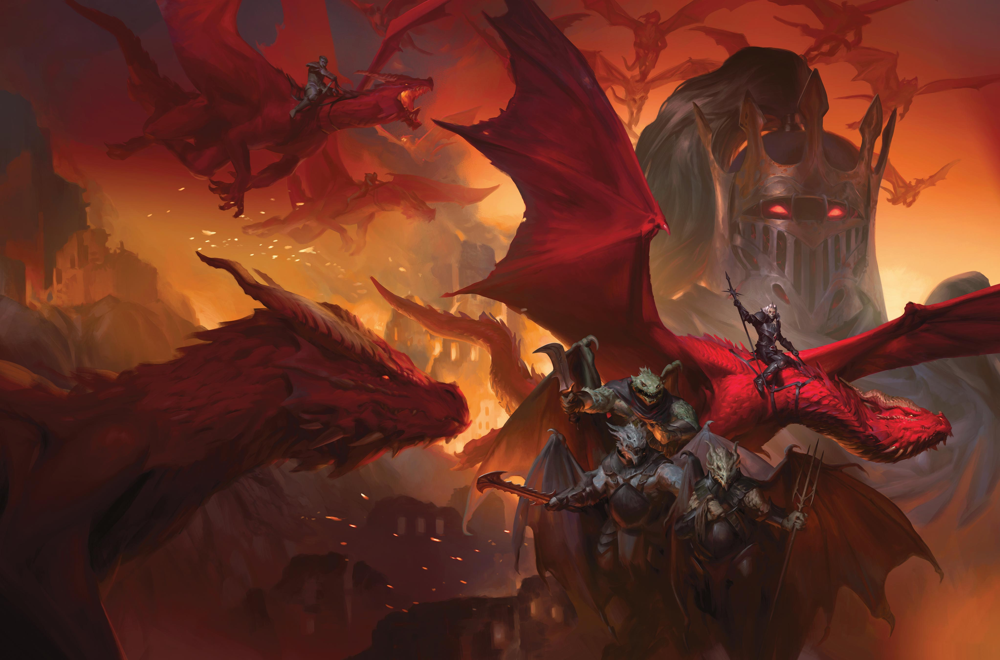

While every world’s history is vast and fractured, with missing pieces and forgotten perspectives, Krynn’s tale has been shattered by the global catastrophe called the Cataclysm. The world of Krynn was forged and destroyed, yet—broken and scarred—it continued on. Most of its people, seeking merely to survive in their slowly healing lands, care little for eons past. But the sages who piece together fragments of the past focus on three periods: before the Cataclysm, the Cataclysm itself, and the dire age since.
Krynn is an old world. The earliest centuries have passed from legend into myth. The story begins in the Age of Starbirth when the gods forgerd the world from primordial chaos. The recprds from this time are merely legends and scriptures, and few even credit their details as fact.
The Age of Dreams was a time of myth and legend, a time when heroes battled evil. Many of the modern cultures and institutions claimed their origins in this era, including the Knights of Solamnia, and the Mages of High Sorcery. Ironically, these cultures and institutions dismiss one another's claims of foundation as myth while zealously defending their own.
The end of the Age of Dreams was marked by a terrible conflict known as the Third Dragon War. During this war, the knight Huma Dragonbane was granted the first of the fabled Dragonlances. With this weapon, he slew the evil dragon god Queen Takhisis (pronounced TAK-eeh-sis). The war ended, forcing the god and her dragons to withdraw from the world. This withdrawl also lead to the withdrawal of the good dragons of Krynn, leaving the world to mortals and the remaining gods.
The end of the Third Dragon War marked the beginning of the millenia known as the Age of Might. Over the centuries, the city of Istar in eastern Ansalon grew into a continent-spanning empire, thanks in part to a military alliance with the Knights of Solamnia. Istar came to be ruled by a series of kingpriests who declared Istar the center of the world and themselves the holy messengers of the gods of good. Under their leadership, Istar declared war on actions, peoples, and even thoughts the kingpriests considered evil. Increasingly rigid and theocratic, Istar reached its apex of power just before its apocalyptic fall. The last kingpriest undertook ever more audacious magical feats, culminating in a ritual to attain godhood and rule Krynn forever in the name of good. At last, the gods acted, united in their condemnation of Istar.
As a last effort to avoid mass destruction, the gods sent the Thirteen Warnings, a series of signs meant to deter the kingpriest. Trees wept blood, fires raged unnaturally, and cyclones struck the gleaming Temple of the Kingpriest. The gods also warned a few chosen mortals, reasoning that if any of them reached Istar and prevented the ritual, the world might not be beyond redemption. But the messengers failed—the kingpriest and his followers dismissed the warnings as the work of evil and continued on their path. As the hour of the kingpriest’s ritual to attain godhood arrived, the gods whisked away their most devout followers and unleashed punishment on all who remained.
A mountain of fire fell from the sky, destroying Istar. The Blood Sea—a new ocean that split eastern Ansalon—consumed the empire. Coastlines shifted all over the world, sundering nations, drowning whole regions, and stranding ports miles from the sea. Though some lands escaped the worst of the destruction, none were spared divine wrath.
The gods and their blessings then faded from the world, and in time, even their names were forgotten.
The Cataclysm ushered in a period of chaos. During the next three centuries, known as the Time of darkness, cultures and ecologies were radically altered, causing famine, plague, and mass migrations. The Knights of Solamnia, the champions of good, were scattered and discredited due to their affiliation with the old kingdom of Istar. The knights became persecuted across the continent, even in their home of Solamnia.
The elven nations shut their borders. The dwarves of Thorbardin withdrew to their deep tunnels, refusing entrance to refugees from the surface. Many societies turned on one another or fell to disease and war. Nations of hobgoblins and ogres spread, capitalizing on humanity’s decline and claiming whole regions. Much that survived the Cataclysm was lost in darkness.
At length, the worst effects of the disaster waned. Though many elves and mountain dwarves remained reclusive, other cultures tentatively rebuilt. Explorers ventured forth to map the drastically altered continent. Societies reestablished bonds of trade that united and diversified them.
As the civilizations of Krynn rebuilt, and new societies arose, the world learned to live with a jarring truth: the gods were truly gone. Religion on Krynn was altered forever. True clerics, who once worked miracles on behalf of their gods, had vanished. While some people remained devout, many others turned to false religions in search of answers and comfort. Some of these new faiths were founded by charlatans, others by zealots. Some claimed the names of the gods, others dismissed them entirely. In this radically changed world bereft of immortal insight, truth became subject to conjecture, even among Krynn’s most dedicated scholars.
The world of Krynn is a place of wonder and magic, of dragons and gods, of good and evil. It is a world of heroes and villains, of knights and wizards, of common folk and extraordinary beings. It is a world of legend, where the actions of a few can shape the destinies of many. It is a world of adventure, where the brave and the bold can make their mark upon the tapestry of history. It is a world of Krynn, a world of dragons. 